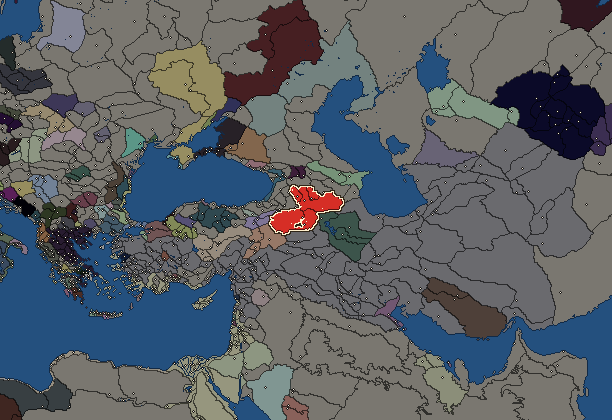
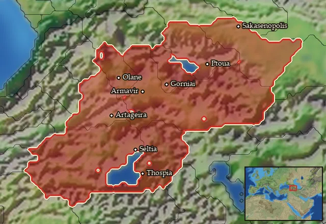

RTR: Imperium Surrectum
RTR: Imperium SurrectumArmenia


- difficulty Medium
- Caucasian culture
- believes
 Armenian
Armenian - 5 settlements
- capital Armavir
- 12,800 manpower
- 3 characters
- 17 faction units
- 431 regional units
The campaign brief
"Such, then, is Armenia, almost all parts being mountainous and rugged, except the few which verge toward Media." – Strabo of Amaseia
We are the people of Armenia. Our country has always lain in between the great powers and thus we often had to assert ourselves in the struggles with our neighbours. Whether it was the invasions of the Hittites or the Cimmerians in the most ancient times or the attacks of the mighty Assyrians, our lands were always the target of foreign powers. Only the Persians brought tranquillity and stability into this region through their tolerant policies, but these were lost again with the destruction of their empire through the bold attack of a young conqueror from the west. Although the foreign warriors passed Armenia, the effects of their campaign were felt here only too soon after Alexander's victory over the Persian king Darius at the Battle of Gaugamela.
The Satrap Orontes commanded the divisions of our country in this battle and his fate hung in the balance for a long time thereafter. Alexander and his successors appointed other men to be satraps of Armenia, but they never really prevailed. Armenia remained a bastion of freedom against the strict Macedonian rulers. After the surprisingly early death of their great king, violent war for control of the empire broke out between the Macedonian generals. In its course, Orontes was again appointed as our Lord by the agreement of Triparadeisos and was able to build up a secure rule. Following the death of the last Successor, Seleukos Nikator, many years later, several peoples on the edges of the empire rose against his son and successor Antiochos. Our King Orontes III freed himself of the Syrian chains and since then has devoted himself to the expansion of his power against the enemies from the south and to the consolidation of his position among the powerful nobility of the country.
Fed by the two great rivers, the Euphrates and the Tigris, the cultivation of grain is the most important commodity in our country. Every year, on many plains and high valleys, we harvest large quantities of grain and can supply even more remote regions. The wine and even the fig grow in sheltered places in the plains. There, horses are grazing, who are indispensable for warfare in the wide plains and the high mountains. Our warriors skilfully use the bow to destroy the enemy from afar whenever it's possible. Volley after volley hits our foes, with a devastating effect on their will to fight - since no one can catch our nimble horse archers. And when the enemy is eventually shaken and losing hope, then, oh then, our iron-clad cataphract riders will dash out of the ranks and smash his army. In the fight against the phalanxes of the Macedonian conquerors, they are the best weapon at our disposal.
King Orontes III has a settled empire under his rule and could extend it to the south to the rich Babylonia or to the distant shores of the Mediterranean Sea in Syria. The Seleucids are the main opponents of such an expansion. But even the smaller kingdoms such as Pontus in the West or the emerging Parthians in the East are further competitors in the struggle for power in the former empire of Alexander the Great. Our king must be wise to decide the moment of attack... since we Armenians have done well to hide in the mountains and survive for centuries. Our country will always lie at the heart of the world, but only the Gods know who will rule it...
Starting settlements
Armenia begins with 5 settlements and 12,800 manpower.
| Settlement | Region | Size | Manpower | Already built | Settlement | Region | Size | Manpower | Already built |
|---|---|---|---|---|---|---|---|---|---|
| Armavir (capital) | Megale Armenia | large town | 4,500 | 13 buildings | Thospia | Basoropeda | large town | 2,700 | 11 buildings |
| Gorniai | Lychnitis | town | 1,600 | 4 buildings | Olane | Ano Araxes | town | 2,000 | 4 buildings |
| Seltia | Taronitis | town | 2,000 | 5 buildings |
What is already built in each settlement
Armavir, in Megale Armenia: Small Treasury, Governor's Villa, Wooden Palisade, Homeland, Cisterns (Sanitation), Region Information Scroll, Roads, Basin Irrigation (Crops), Local Market, Basic Armoury, Karahunj, Dyes Collectors (Urban), Horse Breeder (Rural)
Thospia, in Basoropeda: Governor's Villa, Wooden Palisade, Homeland, Cisterns (Sanitation), Highland Pasturing (Husbandry), Region Information Scroll, Roads, Local Barter, Training Grounds, Saltworks (Industry), Shrine
Gorniai, in Lychnitis: Governor's House, Homeland, Region Information Scroll, Local Barter
Olane, in Ano Araxes: Governor's House, Homeland, Region Information Scroll, Local Barter
Seltia, in Taronitis: Governor's House, Homeland, Region Information Scroll, Local Barter, Slope Pasturing (Husbandry)
Homeland
Armenia's homeland is 8 regions. Only there can it install the Homeland government (more on homelands).

Ano Araxes · Ano Euphrates · Basoropeda · Boreia Lychnitis · Lychnitis · Megale Armenia · Sakasene · Taronitis
Starting diplomacy
Allied with (4):  Armenia Minor ·
Armenia Minor ·  Cappadocia ·
Cappadocia ·  Seleucid Empire ·
Seleucid Empire ·  Sophene
Sophene
Trade agreements with (4):  Armenia Minor ·
Armenia Minor ·  Cappadocia ·
Cappadocia ·  Seleucid Empire ·
Seleucid Empire ·  Sophene
Sophene
At peace with every other faction.
Like every faction, it is also at war with the  Free Peoples, who hold every settlement no faction does.
Free Peoples, who hold every settlement no faction does.
Starting characters
| Name | Role | Age | Name | Role | Age | Name | Role | Age | |||
|---|---|---|---|---|---|---|---|---|---|---|---|
| Orontes | General | 65 | Sames | General | 45 | Arsames | General | 25 |
Reforms
Open to every faction: Military innovations have arrived!, Second wave of military innovations have arrived!.
Units you can recruit
The same as in the main campaign.